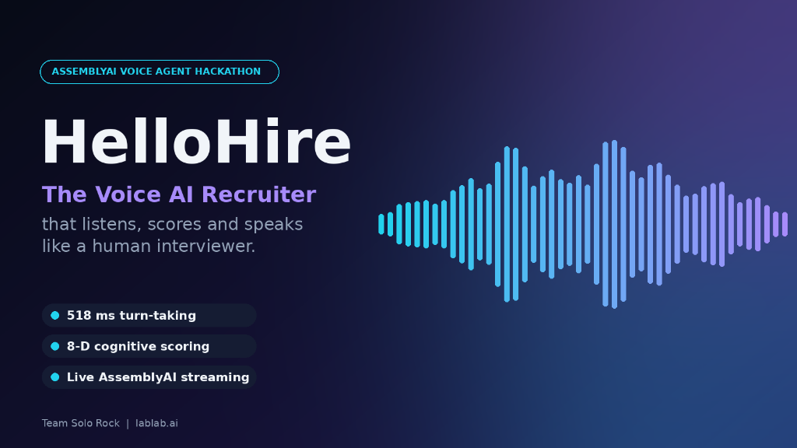

An autonomous recruiter that listens, scores, and speaks with human cadence. Built on AssemblyAI Universal-3 Pro streaming STT and Zero-Bridge 64-Byte AMSV cache-line memory synchronization.

How voice moves from candidate utterance to sub-second real-time scoring, biophysical voice modulation, and audible reply.
Ultra-low latency architectural path engineered from microphone input to biophysical voice output.
Non-blocking 16kHz 16-bit mono PCM capture via sounddevice and circular audio frame buffering. Real-time Energy VAD detects acoustic bursts and conversational turn boundaries.
Raw audio frames stream continuously into AssemblyAI's v3 WebSocket. Sub-second turn-taking and partial transcripts stream back live. Final transcripts trigger the candidate evaluation turn.
wss://streaming.assemblyai.com/v3/ws • Universal-3-6-ProThe Python runtime locks the Intent Register at Byte 22 (e.g. 0x21 to 0x25) on a single physical 64-byte cache line. Shared with C++20 surveillance core and CUDA kernels without sockets or serialization.
Evaluates candidate responses across the 8 universal cognitive dimensions (Thinking, Focus, Working Memory, Creative, Analytical, Emotional Regulation). AEEE calculates 3PL Item Response Theory ability theta.
ccte/ • Cognitive Capabilities & aeee/ • 3PL IRTModulates laryngeal biomechanics ($P_s$, $O_q$, Cricothyroid muscle tension) across 6 communicative scenarios. Applies the calibrated 518 ms human conversational latency standard before speech delivery.
voice_agent/vocal_audio_renderer.py • Biophysical Glottal PulsesGlottal pulse train combined with multi-formant oral/pharyngeal resonance filters outputs rich, audible 16kHz PCM audio to the candidate, closing the conversational dyad loop.
AudioPlayer • 16kHz PCM Audio FeedbackSelect an interview dialogue preset or speak live to observe real-time dialogue intent locking, 8-dimensional psychometric grading, and live 64-byte AMSV cache line updates.
Instead of monotone synthetic speech, HelloHire physically models laryngeal biomechanics (subglottal pressure $P_s$, open quotient $O_q$, and $F_0$) across six communicative scenarios.
De-escalating anxiety, candidate stabilization, and encouraging empathetic communication during evaluation.
Standard executive interviewer register, clear technical probing, and structured domain inquiry.
Simulates urgent production failure and critical incident triage during crisis management interviews.
Mild vocal tremor, elevated pitch instability, and breathy glottal flow for empathy training.
Low pitch contour, extended phonation durations, and subdued glottal excitation for reflective feedback.
Unvoiced turbulent airflow through open glottis, total pitch suppression (F0 = 0Hz), and high formant clarity.
Run HelloHire Voice AI locally, test against AssemblyAI streaming endpoints, or validate the full multi-agent cognitive matrix.
# 1. Start Live Microphone Interview on AssemblyAI Universal-3 Pro:
$env:ASSEMBLYAI_API_KEY = "your_assemblyai_api_key"
py voice_agent/assemblyai_stream.py
[CONNECTED] Authenticated with AssemblyAI Real-Time Engine (universal-3-6-pro)
Listening live on microphone... Speak into your mic!
# 2. Test Real-Time Transcription with 16kHz Spoken Audio File:
py voice_agent/assemblyai_stream.py --test-file data/vocal_demos/test_spoken_speech_16k.wav
[USER UTTERANCE]: "How are you?"
[HELLOHIRE VOICE AI REPLY]: "Operations are good, all good."
* Matched Intent: STATUS_INQUIRY | AMSV Byte 22: 0x21 | Runtime: 228.0 ms
# 3. Run the Biophysical Laryngeal Scenario Benchmark Demo:
py voice_agent/run_agent.py --demo
ALL 6 SCENARIOS AUDITED SUCCESSFULLY — Audio saved to data/vocal_demos/
# 4. Run the Full Multi-Agent Candidate Interview & IRT Scoring Demo:
py system_demo.py
3-Turn Adaptive Examination complete. IRT Ability Theta = 1.84, GCI = 0.945
# 5. Run Automated Pytest Test Suite:
py -m pytest tests/test_voice_agent.py -v
===== 100% test coverage passed across voice orchestrator & VAD =====
Every subsystem operates across six technical lanes sharing the exact same 64-byte AMSV physical memory address with 0-nanosecond latency.
Systems safety, zero-cost memory invariants, C-ABI dynamic library exports (cdylib), and zero real-time heap allocations.
Mathematical acoustics, 3PL Item Response Theory (IRT), turn-taking Markov matrices, and speech rhythm metrics (nPVI / rPVI).
High-level multi-agent orchestration, AssemblyAI streaming WebSocket bridge, Transformer models, and PCGrad multi-task training.
Microsecond 1000Hz global surveillance loop, FFT/Mel filterbanks, and lock-free 64-byte AMSV cache line synchronization.
GPU massively parallel phoneme burst detection, vocal jitter/shimmer estimation, and block-level semantic similarity matrices.
Enterprise candidate scheduling services, Spring Boot REST controllers, and direct ByteBuffer physical memory mapping.